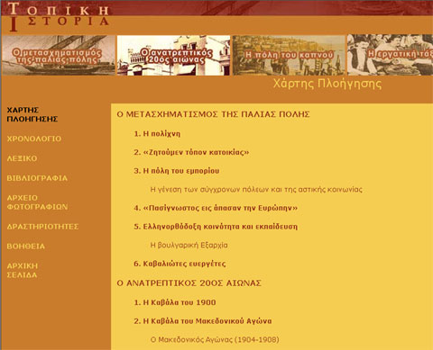

| Εγχειρίδιο Χρήσης |
5.1 Χάρτης ΠλοήγησηςΟ χάρτης πλοήγησης είναι ένα εργαλείο, το οποίο βρίσκεται σε όλες τις ενότητες. Παρουσιάζει τη δομή της και είναι ένας εύκολος τρόπος για να μπορεί ο χρήστης να μεταφέρεται κατευθείαν στη σελίδα που επιθυμεί. Στο χάρτη πλοήγησης καταγράφονται τα εξής:
Κάνοντας κλικ σε ένα τίτλο ο χρήστης μεταφέρεται στην αντίστοιχη σελίδα. Πατώντας το κουμπί επιστροφής του φυλλομετρητή του (ή πατώντας το πλήκτρο 'Backspace') ο χρήστης μπορεί να επιστρέψει στο χάρτη πλοήγησης.  Εικόνα 5.1.1 Χάρτης Πλοήγησης |